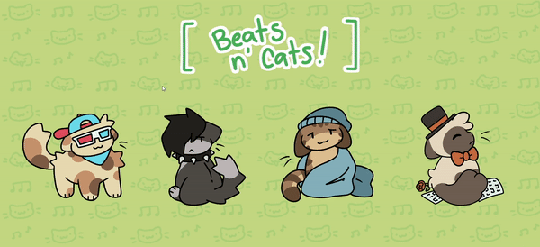
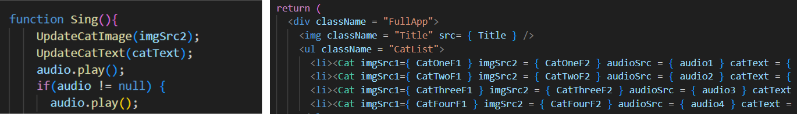

beats-n-cats.html
nov 2023 - dec 2023 <
Beats and Cats is a project made in React.js. Artwork was done in Medibang Paint and website was coded using html, css, and javascript.


This project was made to experiement with using the React.js framework. It features four cats, all of which play a different song. The "cat" framework and coding is the same for all 4 cats, and the individual sprites and songs are passed into it four separate times to create the different cats.
We originally hoped to incorporate Spotify's API, but it didn't make the final cut due to the fact that some songs do not have a 30 second preview and as such the cat code would break. However, it's a feature we hope to include in the future.
